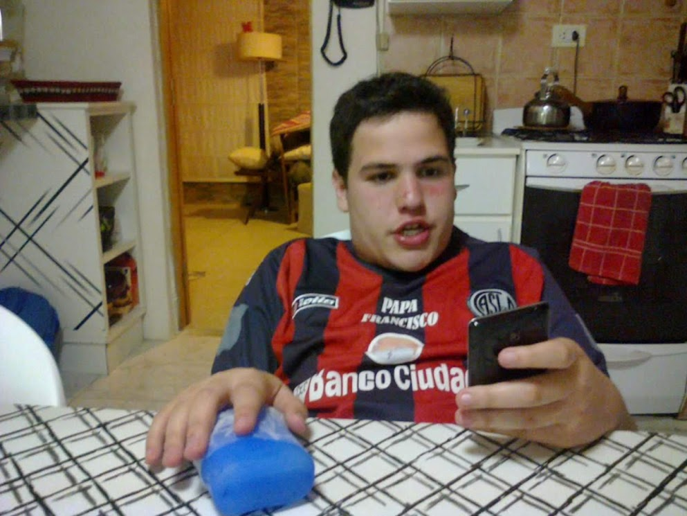

Maurito

Uno de los fundadores del grupo. Ex obeso morbido
Tiene carpetas de nudes y cree que San Lamento es el tercer grande. Un paraguayo le da ansiedad
Aqui va la historia de Mauro
Oriundo de Mar del plata nacido en no se que chota es un virgo hincha de San Lamento el equipo más virgo del mundo
Emigro a España porque le debia 7 pesos al transa y no queria ir a bajo flores a pagarle por el paco que consume
Tiene una coleccion de perfumes porque no se baña. Hizo dieta y está flaco pero sigue teniendo brazos de mujer
Datos de Mauro
- Peso: 3kg
- Altura: 1.67cm
- Tiene depresion
- Piensa que es español
- 500 denuncias por violacion y violencia de género
- Aprendió a correr para que las minas le dejen de pegar
- Era gordo en honor a su maximo idolo Ortigorda
Le gusta el pitito